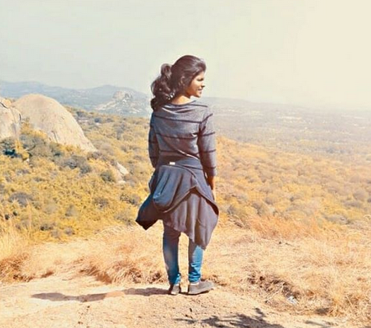

ANN MARY JOSE
17CS1A3122
I am a person who is positive about every aspect of life. There are many things I like to do, to see, and to experience. I love travelling and thus thought of making this webpage.I always wanted to be a great traveller, like Michael Palin who attempted to circumnavigate the world in 80 days. Of course, I am nowhere close to him, yet.I am just someone who does some errands,small trips,and some photgraphy.But my dream is still alive.I took BCA to learn more about computers as they have fasinated me since its invention.
